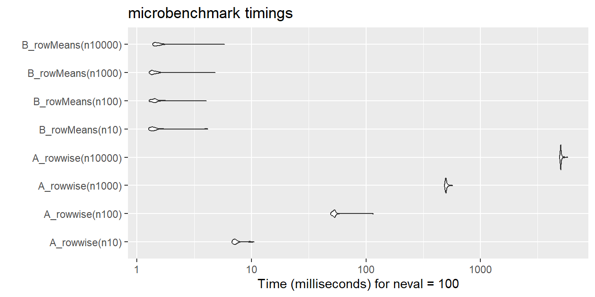

library(tidyverse) # needs dplyr version 1.1.0+
# Calculate mean fuel efficiency (mfe) from highway (hwy) and city (cty)
mpg |> mutate(mfe = rowMeans(pick(hwy, cty)))Row-wise means in dplyr
teaching
data science
Guide to calculating mean scores in dplyr
TL;DR
For those looking for a quick answer, here is an example of my recommended approach, which calculates a new variable, the mean fuel efficiency (mfe) of each car, as the row-wise mean of two existing variables, highway fuel efficiency (hwy) and city fuel efficiency (cty):
Introduction
dplyr is an amazing tool for data wrangling and I use it daily. However, there is one type of operation that I frequently do that has historically caused me some confusion and frustration: row-wise means. Once I figured out what was going on, I wanted to share what I learned through this brief blog post. It will focus on how to avoid some common issues I ran into and how to speed up rowwise operations with large data frames. I hope some find it helpful.
# Load packages used in this post
library(tidyverse)
library(microbenchmark)
# Set random seed for reproduciblity
set.seed(2023)Simulated Example Data
Let’s say we have a tibble (or data frame) containing 10 observations and 4 numerical variables: y, x1, x2, and x3. We can simulate this quickly using rnorm() to sample from different normal distributions.
# Simulate data
y <- rnorm(n = 10, mean = 100, sd = 15)
x1 <- rnorm(n = 10, mean = 0, sd = 1)
x2 <- rnorm(n = 10, mean = 10, sd = 10)
x3 <- rnorm(n = 10, mean = 20, sd = 5)
n10 <- tibble(y, x1, x2, x3)Doing it “by-hand”
Now let’s say we want to add a new variable xmean to the tibble containing each observation’s mean of x1, x2, and x3.
We can use mutate() and math to achieve this:
# Example 0 (works but inconvenient)
n10 |>
mutate(xmean = (x1 + x2 + x3) / 3)# A tibble: 10 × 5
y x1 x2 x3 xmean
<dbl> <dbl> <dbl> <dbl> <dbl>
1 98.7 0.327 5.88 18.6 8.28
2 85.3 -0.413 7.06 26.4 11.0
3 71.9 0.562 22.2 15.9 12.9
4 97.2 0.663 12.4 19.8 11.0
5 90.5 -0.603 5.55 16.8 7.25
6 116. 0.698 -8.48 17.8 3.34
7 86.3 0.596 3.71 22.5 8.95
8 115. 0.452 1.39 25.6 9.16
9 94.0 0.897 25.1 24.9 17.0
10 93.0 0.572 37.4 19.4 19.1 A Failed Attempt
But this approach will be a hassle if you have any missing values or if you have lots of variables to average. Instead, if you are just learning {dplyr}, you would probably try to combine the mean() and mutate() functions as below.
# Example 1 (doesn't work)
n10 |>
mutate(xmean = mean(c(x1, x2, x3)))# A tibble: 10 × 5
y x1 x2 x3 xmean
<dbl> <dbl> <dbl> <dbl> <dbl>
1 98.7 0.327 5.88 18.6 10.8
2 85.3 -0.413 7.06 26.4 10.8
3 71.9 0.562 22.2 15.9 10.8
4 97.2 0.663 12.4 19.8 10.8
5 90.5 -0.603 5.55 16.8 10.8
6 116. 0.698 -8.48 17.8 10.8
7 86.3 0.596 3.71 22.5 10.8
8 115. 0.452 1.39 25.6 10.8
9 94.0 0.897 25.1 24.9 10.8
10 93.0 0.572 37.4 19.4 10.8However, you’ll notice in the output above that the new xmean variable contains repetitions of a constant value. What is going on here? Basically, what mutate() did was take all the numbers in x1, x2, and x3, combine them into one long vector of 30 numbers, and send that vector to the mean() function. The mean() function then returns a single value—the mean of all 30 numbers—and tries to put that into the new column xmean. But because the column needs to be a vector of 10 numbers to fit into the tibble, that single value gets recycled (i.e., repeated 10 times). To verify this is what happened, we can do the operation by hand and see that we get the same number:
mean(c(x1, x2, x3))[1] 10.79233So, clearly mutate() is not doing what we intended it to do.
The across() approach
Luckily, dplyr 1.0.0 added some great features for doing operations within rows. The simplest version simply adds a call to the rowwise() function to our pipeline before the mutate().
# Example 2 (works but slow)
n10 |>
rowwise() |>
mutate(xmean = mean(c(x1, x2, x3)))# A tibble: 10 × 5
# Rowwise:
y x1 x2 x3 xmean
<dbl> <dbl> <dbl> <dbl> <dbl>
1 98.7 0.327 5.88 18.6 8.28
2 85.3 -0.413 7.06 26.4 11.0
3 71.9 0.562 22.2 15.9 12.9
4 97.2 0.663 12.4 19.8 11.0
5 90.5 -0.603 5.55 16.8 7.25
6 116. 0.698 -8.48 17.8 3.34
7 86.3 0.596 3.71 22.5 8.95
8 115. 0.452 1.39 25.6 9.16
9 94.0 0.897 25.1 24.9 17.0
10 93.0 0.572 37.4 19.4 19.1 This did what we wanted it to do, despite the actual mutate() call being identical to what is was before! Pretty cool. We can even save some time by selecting the variables to include in the mean() operation automatically, instead of listing them out in the c() function. This isn’t such a time-savings in this case with only three variables, but in settings with more variables it can really add up. To do so, we just need to use a tidy selection function; in this case, all the variables we want to include start with the letter “x” so let’s use starts_with().
# Example 3 (doesn't work)
n10 |>
rowwise()|>
mutate(xmean = mean(starts_with("x")))Error in `mutate()`:
ℹ In argument: `xmean = mean(starts_with("x"))`.
ℹ In row 1.
Caused by error:
! `starts_with()` must be used within a *selecting* function.
ℹ See <https://tidyselect.r-lib.org/reference/faq-selection-context.html> for
details.Shoot, that didn’t work. But why not? Basically, the problem is that mutate() doesn’t know what do to with selection functions like starts_with(). The error message basically says that we are in the “wrong context” for a selection function.
Tidy selection with c_across()
Luckily, dplyr 1.0.0 also added the c_across() function, which will allow us to change the context to one that does allow selection functions. The code below now works as intended, first selecting all the variables starting with “x” and then computing their row-wise means.
# Example 4 (works but slow)
n10 |>
rowwise() |>
mutate(xmean = mean(c_across(starts_with("x"))))# A tibble: 10 × 5
# Rowwise:
y x1 x2 x3 xmean
<dbl> <dbl> <dbl> <dbl> <dbl>
1 98.7 0.327 5.88 18.6 8.28
2 85.3 -0.413 7.06 26.4 11.0
3 71.9 0.562 22.2 15.9 12.9
4 97.2 0.663 12.4 19.8 11.0
5 90.5 -0.603 5.55 16.8 7.25
6 116. 0.698 -8.48 17.8 3.34
7 86.3 0.596 3.71 22.5 8.95
8 115. 0.452 1.39 25.6 9.16
9 94.0 0.897 25.1 24.9 17.0
10 93.0 0.572 37.4 19.4 19.1 Remember to ungroup()
There are two things to note about rowwise(), however. First, it transformed our tibble into an implicitly “grouped” tibble, which is what allowed our mutate() function to calculate row-wise means instead of overall means (basically, it is treating each row as a separate group and calculating the means per group/row). However, after that mutate() call, the tibble remains grouped. This is handy if we want to continue doing row-wise operations, but how do we tell it to stop once we are done with row-wise operations and want to return to “normal” behavior? Let’s see when this could be a problem; one example is if we want to calculate the maximum row-wise mean xmean_max.
# Example 5 (doesn't work)
n10 |>
rowwise() |>
mutate(xmean = mean(c_across(starts_with("x")))) |>
summarize(xmean_max = max(xmean))# A tibble: 10 × 1
xmean_max
<dbl>
1 8.28
2 11.0
3 12.9
4 11.0
5 7.25
6 3.34
7 8.95
8 9.16
9 17.0
10 19.1 Here we wanted to summarize over all values of xmean and expected a single maximum value. Instead we got the same 10 values back. What happened? Basically, our tibble was still implicitly grouped by row and the summarize() function respected that, calculating the maximum of each group/row. To avoid this behavior, we can add the ungroup() function to our pipeline (reverting the tibble back to a standard one without implicit grouping).
# Example 6 (works but slow)
n10 |>
rowwise() |>
mutate(xmean = mean(c_across(starts_with("x")))) |>
ungroup() |>
summarize(xmean_max = max(xmean))# A tibble: 1 × 1
xmean_max
<dbl>
1 19.1Now we get the desired behavior, and so I am usually very careful to add ungroup() to my pipeline as soon as I am done with row-wise operations (otherwise you might end up with some unexpected problems).
Faster means with rowMeans()
The other thing to note about rowwise() is that it can be slow. With a small tibble like this, it doesn’t matter much, but the difference could be meaningful for larger and more complex data. In these cases, you have some alternatives. This blog post describes some of them, but does not address the specific case of means, which is what I want to do the most in practice. A faster alternative in this case is to use the rowMeans() function. As you might imagine, this function takes in a numeric matrix or dataframe and returns the mean of each row.
rowMeans(n10) [1] 30.89482 29.57077 27.64172 32.52192 28.06156 31.59763 28.28442 35.62799
[9] 36.23378 37.56994But we want to exclude the y variable and append it to the n10 tibble. How to do so? We might reasonably try to put it into mutate() like we did with mean():
# Example 7 (doesn't work)
n10 |>
mutate(xmean = rowMeans(c(x1, x2, x3)))Error in `mutate()`:
ℹ In argument: `xmean = rowMeans(c(x1, x2, x3))`.
Caused by error in `rowMeans()`:
! 'x' must be an array of at least two dimensionsBut here we run into a problem. rowMeans() is expecting a numeric matrix or data frame, but is being provided with a vector of 30 numbers again (as in Example 1). Thus, it doesn’t have rows to calculate means within and returns an error. We can solve this by transforming the vector to a matrix:
# Example 8 (works but inconvenient)
n10 |>
mutate(xmean = rowMeans(matrix(c(x1, x2, x3), ncol = 3)))# A tibble: 10 × 5
y x1 x2 x3 xmean
<dbl> <dbl> <dbl> <dbl> <dbl>
1 98.7 0.327 5.88 18.6 8.28
2 85.3 -0.413 7.06 26.4 11.0
3 71.9 0.562 22.2 15.9 12.9
4 97.2 0.663 12.4 19.8 11.0
5 90.5 -0.603 5.55 16.8 7.25
6 116. 0.698 -8.48 17.8 3.34
7 86.3 0.596 3.71 22.5 8.95
8 115. 0.452 1.39 25.6 9.16
9 94.0 0.897 25.1 24.9 17.0
10 93.0 0.572 37.4 19.4 19.1 But dplyr 1.1.0 added a way to streamline this kind of thing. We can use the new pick() function to create this context and avoid the need for the dot operator. Note that we using pick() here instead of c_across() because the latter is for working within rows (in combination with rowwise()) and here we want the row-wise operations to be handled by rowMeans().
# Example 11 (works and convenient and fast)
n10 |>
mutate(xmean = rowMeans(pick(starts_with("x"))))# A tibble: 10 × 5
y x1 x2 x3 xmean
<dbl> <dbl> <dbl> <dbl> <dbl>
1 98.7 0.327 5.88 18.6 8.28
2 85.3 -0.413 7.06 26.4 11.0
3 71.9 0.562 22.2 15.9 12.9
4 97.2 0.663 12.4 19.8 11.0
5 90.5 -0.603 5.55 16.8 7.25
6 116. 0.698 -8.48 17.8 3.34
7 86.3 0.596 3.71 22.5 8.95
8 115. 0.452 1.39 25.6 9.16
9 94.0 0.897 25.1 24.9 17.0
10 93.0 0.572 37.4 19.4 19.1 To test the speed of each approach, we can use the microbenchmark package, which will precisely time each approach over multiple iterations (in this case, 100). Let’s wrap up by testing the speech of each approach with increasingly large data sets.
# Create function wrappers so the microbenchmark output is prettier
A_rowwise <- function(.data) {
.data |>
rowwise() |>
mutate(xmean = mean(c_across(starts_with("x")))) |>
ungroup()
}
B_rowMeans <- function(.data) {
.data |>
mutate(xmean = rowMeans(pick(starts_with("x"))))
}
# Simulate larger datasets
n100 <- n10 |> slice(rep(1:n(), times = 10))
n1000 <- n100 |> slice(rep(1:n(), times = 10))
n10000 <- n1000 |> slice(rep(1:n(), times = 10))
# Perform microbenchmarking
speedtest <-
microbenchmark(
A_rowwise(n10),
A_rowwise(n100),
A_rowwise(n1000),
A_rowwise(n10000),
B_rowMeans(n10),
B_rowMeans(n100),
B_rowMeans(n1000),
B_rowMeans(n10000),
times = 100L
)| Approach | mean_time_ms | sd_time_ms | min_time_ms | max_time_ms |
|---|---|---|---|---|
| A_rowwise(n10) | 12.025 | 1.279 | 10.999 | 18.844 |
| A_rowwise(n100) | 90.208 | 4.903 | 84.182 | 126.810 |
| A_rowwise(n1000) | 878.763 | 42.149 | 835.994 | 1053.001 |
| A_rowwise(n10000) | 8767.835 | 217.319 | 8500.523 | 10053.289 |
| B_rowMeans(n10) | 2.852 | 0.530 | 2.470 | 7.109 |
| B_rowMeans(n100) | 2.875 | 0.577 | 2.451 | 5.720 |
| B_rowMeans(n1000) | 2.865 | 0.501 | 2.458 | 5.665 |
| B_rowMeans(n10000) | 2.972 | 0.540 | 2.575 | 5.646 |
autoplot(speedtest)
The speed difference between approaches grows with the number of observations and becomes quite noticeable at 1000 observations or more. So, although I think it is worth learning the new rowwise() and c_across() functions, in settings where observations are many and speed in paramount, it may be worthwhile to learn “parallel” functions such as rowMeans(), rowSums(), pmin(), pmax(), and paste().
Session Info
Click here for session info
sessionInfo()R version 4.2.3 (2023-03-15 ucrt)
Platform: x86_64-w64-mingw32/x64 (64-bit)
Running under: Windows 10 x64 (build 22624)
Matrix products: default
locale:
[1] LC_COLLATE=English_United States.utf8
[2] LC_CTYPE=English_United States.utf8
[3] LC_MONETARY=English_United States.utf8
[4] LC_NUMERIC=C
[5] LC_TIME=English_United States.utf8
attached base packages:
[1] stats graphics grDevices datasets utils methods base
other attached packages:
[1] kableExtra_1.3.4 knitr_1.41 microbenchmark_1.4.9
[4] forcats_0.5.2 stringr_1.5.0 dplyr_1.1.0
[7] purrr_1.0.1 readr_2.1.3 tidyr_1.2.1
[10] tibble_3.1.8 ggplot2_3.4.0 tidyverse_1.3.2
loaded via a namespace (and not attached):
[1] svglite_2.1.1 lubridate_1.9.0 assertthat_0.2.1
[4] digest_0.6.31 utf8_1.2.2 R6_2.5.1
[7] cellranger_1.1.0 backports_1.4.1 reprex_2.0.2
[10] evaluate_0.20 highr_0.10 httr_1.4.4
[13] pillar_1.8.1 rlang_1.1.0 googlesheets4_1.0.1
[16] readxl_1.4.1 rstudioapi_0.14 rmarkdown_2.19
[19] webshot_0.5.4 googledrive_2.0.0 htmlwidgets_1.6.2
[22] munsell_0.5.0 broom_1.0.2 compiler_4.2.3
[25] modelr_0.1.10 xfun_0.36 systemfonts_1.0.4
[28] pkgconfig_2.0.3 htmltools_0.5.4 tidyselect_1.2.0
[31] viridisLite_0.4.1 fansi_1.0.3 crayon_1.5.2
[34] tzdb_0.3.0 dbplyr_2.3.0 withr_2.5.0
[37] grid_4.2.3 jsonlite_1.8.4 gtable_0.3.1
[40] lifecycle_1.0.3 DBI_1.1.3 magrittr_2.0.3
[43] scales_1.2.1 cli_3.6.0 stringi_1.7.12
[46] farver_2.1.1 renv_0.16.0 fs_1.5.2
[49] xml2_1.3.3 ellipsis_0.3.2 generics_0.1.3
[52] vctrs_0.6.0 tools_4.2.3 glue_1.6.2
[55] hms_1.1.2 fastmap_1.1.0 yaml_2.3.6
[58] timechange_0.2.0 colorspace_2.0-3 gargle_1.2.1
[61] rvest_1.0.3 haven_2.5.1 Notes / References
Note: This is an update of an older blog post on my personal website.